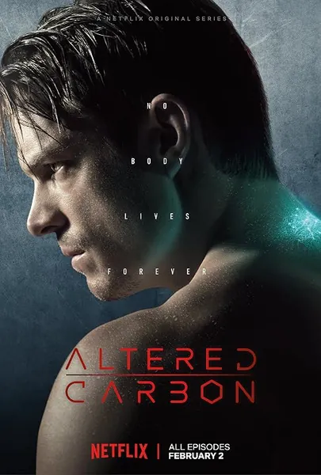

Сериал · 2018 · Фантастика
Экранизация романа Ричарда К. Моргана «Видоизмененный углерод» — история о мире, где сознание хранится на цифровом носителе («стеке»), тела служат сменными «оболочками», а деньги означают возможность жить вечно. Воскрешенный после долгого заточения «посланник» Такеши Ковач расследует гибель миллиардера, вернувшегося к жизни в новом теле: речь идет о самоубийстве, которого не могло произойти. Это неонуар о памяти, цифровом бессмертии и цене, которую платят те, кому оно недоступно.
An adaptation of Richard K. Morgan's 'Altered Carbon' — a world where consciousness is stored on a stack, bodies are swappable 'sleeves', and money means the ability to live forever. Woken from storage, the envoy Takeshi Kovacs investigates the death of a billionaire resurrected in a new body: a suicide that could not have happened. Neo-noir about memory, digital immortality and the price paid by those it was denied.